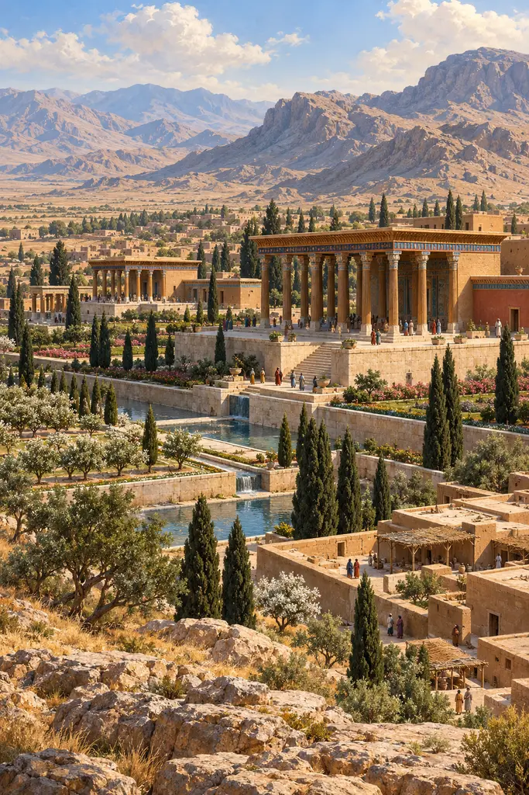
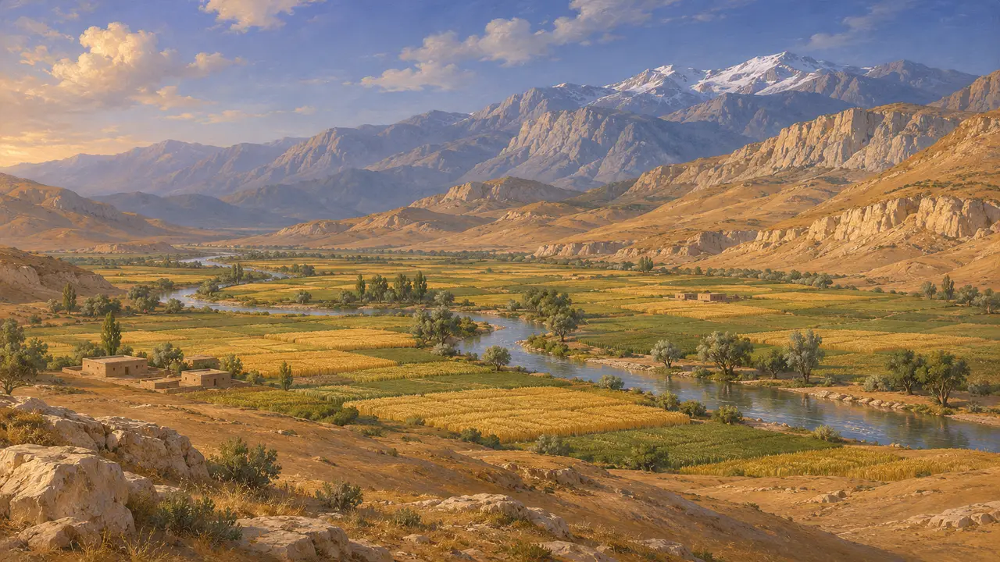
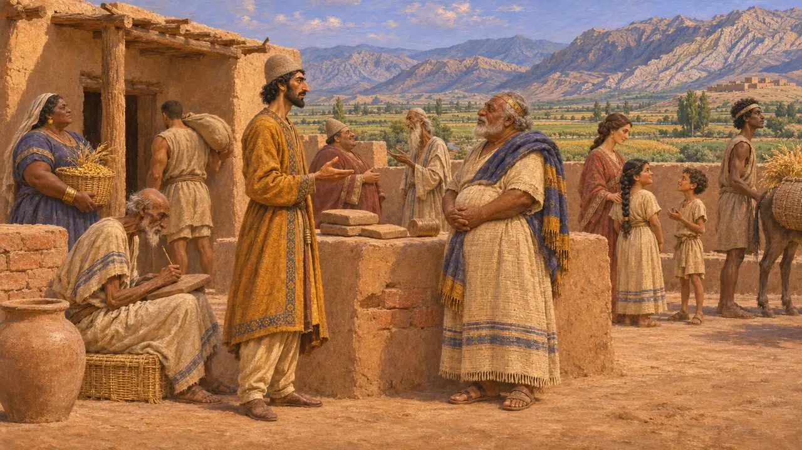
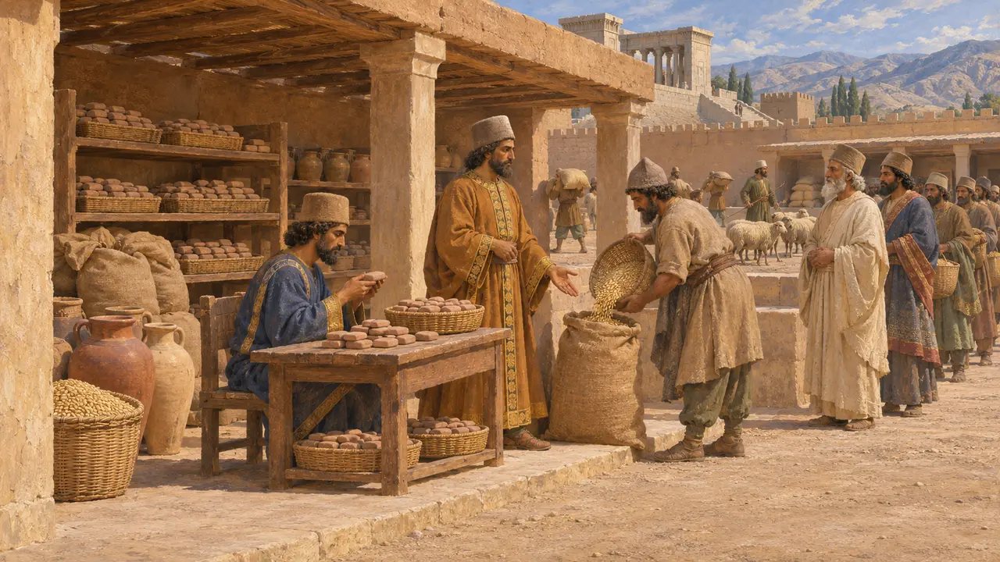
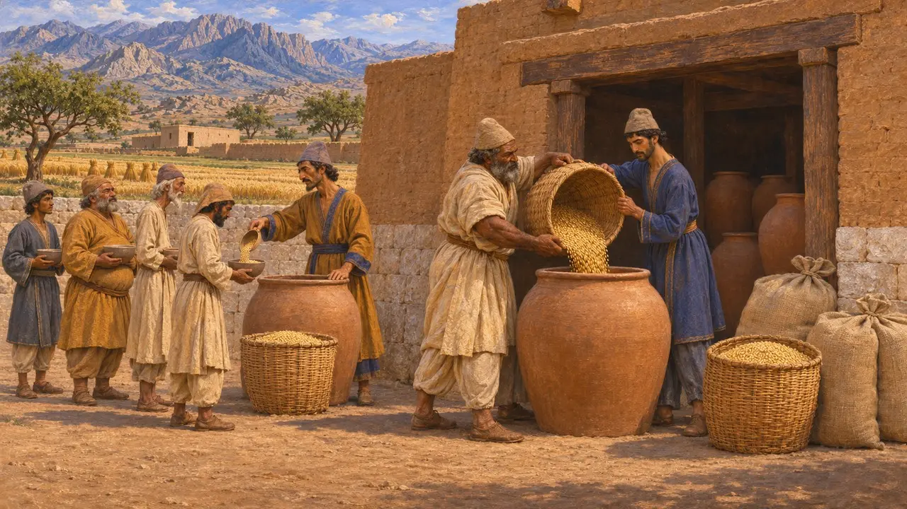

波西斯，古波斯语称帕尔萨，是波斯人的故土，位于波斯湾以北，是一片高谷与群山之地。居鲁士的家族由此崛起，统治了一个帝国。居鲁士在此修建了帕萨尔加德和他的陵墓，大流士在此开建波斯波利斯，大流士及其继任者都葬于附近的崖墓之中。这里的泥板档案使其成为早期帝国文献记载最详尽的地区之一。
游戏中： 游戏将波西斯视为帕萨尔加德与帕尔萨两个关卡所在的本土行省。这大体正确，不过波西斯并非普通行省，它与各行省之间究竟是何关系，史学界至今仍有争论。

海岸、平原与山脉
古代记述斯特拉波在大流士之后约五个世纪写作，他将波西斯分为三个地带：濒临海湾、炎热多沙的海岸；平原与河流交织的肥沃中部；以及寒冷多山的北部。阿契美尼德的核心地带位于扎格罗斯山脉的高地河谷中，例如由库尔河与普尔瓦尔河灌溉的马夫达什特平原。今日伊朗的法尔斯省仍沿用这个古老的名称。
Strabo 15.3.1

从安善到帕尔萨
见于史载居鲁士在其泥土圆柱上称自己及其先祖为安善王，这是一个古老的埃兰王号。在库尔河盆地的塔勒-伊马利安出土的铭文砖证实该土丘即安善。波斯人大概在公元前一千纪初定居于埃兰人之中。他们的语言属伊朗语，但其文字、行政和艺术在很大程度上取法于埃兰。
Cyrus Cylinder; excavations at Tall-i Malyan

国王经济的档案
见于史载1933年至1934年间，人们在波斯波利斯的城防墙中发现了数以千计的泥板，年代约为公元前509年至前493年，大多以埃兰语写成。泥板记录了在总管帕尔纳卡治下，向波西斯乃至埃兰各地的劳工、旅人、官员和祭司发放的谷物、葡萄酒、啤酒和牲畜。泥板还记载了献给阿胡拉马兹达以及洪班等埃兰神祇的祭品。
R. T. Hallock, Persepolis Fortification Tablets, 1969; W. Henkelman, The Other Gods Who Are, 2008

免于贡赋
争夺中据希罗多德记载，唯有波斯人不纳贡赋，免于赋税。然而波斯波利斯城防泥板显示，波西斯各地的庄稼被收入王家仓储，劳役队伍也由官府供养和调配。史家争论的是：这项豁免是否仅指免缴其他各地所纳的白银贡赋；波西斯究竟是否设有总督，抑或直接由国王自己的庄园管理。
Herodotus 3.97; P. Briant, From Cyrus to Alexander, 2002
土地贫瘠，民风剽悍
后世传说希罗多德以一个居鲁士时代的故事为《历史》作结。一位名叫阿尔腾巴雷斯的波斯人提议离开崎岖贫瘠的故土，迁往更富庶之地；居鲁士告诫道，柔软的土地养出柔弱的人。波斯人宁愿居于苦寒之地而统治他人，也不愿耕种平原而受人奴役。这个故事是为波斯战败之后的希腊读者提供的道德框架，并非一场真实辩论的记录。
Herodotus 9.122
来源
- R. T. Hallock, Persepolis Fortification Tablets, 1969
- W. Henkelman, The Other Gods Who Are, 2008
- P. Briant, From Cyrus to Alexander, 2002
- Herodotus 3.97
- Herodotus 9.122
- Strabo 15.3.1